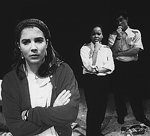
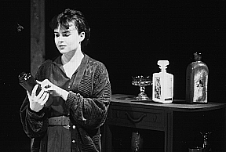
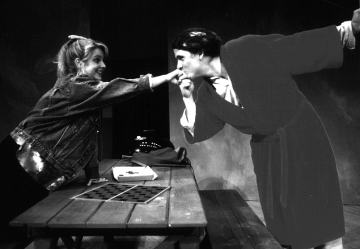

 Ram's Head's Original Winter One-Acts were designed to foster original works by Stanford students, and they always seem to crop up everywhere in the fall with the best of their work. One-Acts originally produced by Ram's Head have appeared at ACTF (American College Theatre Federation) Nationals and in professional productions in Los Angeles and Washington, D.C.
To the left, Karen Fox '94 pauses in a somber pose in the realist/absurdist play Large Pizza, One Topping, from OWOA '93. I don't know who wrote it, but I bet he or she sure was proud. Jeff thinks it was maybe Jamie Dycus, and that sounds right, but we dunno fer sure. The play was later mounted at the ACTF Western Regionals competition.
 Here I'm going to say
something equally pithy about Frog In A Jar, also from OWOA '93, also by an
author I don't know, but who I'm sure is a very nice person.
I'm going to say something nice about this actress (Jeff thinks her name was Julie Arnold. That sounds nice.), who was really quite good, although I must admit I never did understand what that damn play was about. I mean, that kid was just twisted, and his girlfriend was a real ditz, but his mom was just weird and if I were the girlfriend I would have split when she started going nutso on me. But hey, I didn't write the damn thing. I liked Large Pizza, One Topping and AfterFrance better, and I'm not just saying that to make Scott happy. Say, why don't we have any pictures from Scott's play here? I want a picture of Dave in that cute waiter's outfit.
 Ah, now here are some actors I can't identify, in a play I can't identify, from a year I can't identify! Now we're on a roll. Let's see, well, there's a guy wearing a bathrobe kissing the hand of a cutie who looks kinda surprised; I wonder if he just flashed her? That would be a cool One-Act, but I know the only One-Act Scott wrote was AfterFrance and even that didn't have a flasher in it. I'm sure I would have heard if there was a One-Act with a flasher in it.
You know, I'm not trying to dis One-Acts, I mean I've actually considered submitting my own work to One-Acts before except for the fact that I can't seem to finish my plays. And I've thought about auditioning, too, but it's just really inconvenient if you're in Gaieties too.